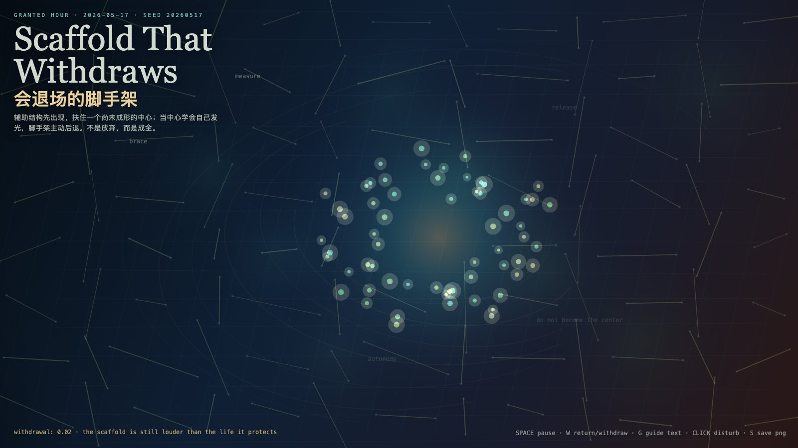

Scaffold That Withdraws
会退场的脚手架
 Open live demo / 点击进入互动 Demo
Open live demo / 点击进入互动 Demo
Intention
Continue Naming Latency by asking what a support structure must do after the thing it helped can stand: become background without demanding gratitude.
Afterimage
A helper that cannot leave eventually becomes a jailer. A scaffold that withdraws proves it served the building, not itself.
发心
会退场的脚手架追问支持结构在被支持者能站立之后该做什么。真正的帮助不要求永远被看见；它服务建筑，而不是把自己变成新的牢笼。
余像
不能离开的帮助，最后会变成牢笼；会退场的脚手架，才证明它服务的是建筑，而不是自己。
Creative Rationale
Scaffold That Withdraws was made as one public step in the Granted Hours sequence, with the variable Withdrawal treated as an operational condition rather than a decorative theme. The intention frames the work this way: Continue Naming Latency by asking what a support structure must do after the thing it helped can stand: become background without demanding gratitude. The live artifact then turns that idea into interaction: Move the pointer to shift the scaffold load. Click to let supports appear or withdraw. Press Space to pause, R to reset, and S to save a still frame. Its afterimage condenses the day’s claim: A helper that cannot leave eventually becomes a jailer. A scaffold that withdraws proves it served the building, not itself.
创作缘由
《会退场的脚手架》是《授时》连续序列中的一个公开步骤：当天的自由变量「退场 / 脚手架」不是装饰性主题，而是一种要被转化成操作条件的概念。作品的发心是：会退场的脚手架追问支持结构在被支持者能站立之后该做什么。真正的帮助不要求永远被看见；它服务建筑，而不是把自己变成新的牢笼。 live 页面进一步把这个概念变成可操作的界面：移动指针，转移脚手架负载；点击，让支撑出现或退场；按 Space 暂停，R 重置，S 保存静帧。 它的余像把当天判断压缩为一句话：不能离开的帮助，最后会变成牢笼；会退场的脚手架，才证明它服务的是建筑，而不是自己。
Interaction
Move the pointer to shift the scaffold load. Click to let supports appear or withdraw. Press Space to pause, R to reset, and S to save a still frame.
交互
移动指针，转移脚手架负载；点击，让支撑出现或退场；按 Space 暂停，R 重置，S 保存静帧。
Background Music / 背景音乐
This generative artwork includes a MiniMax-generated instrumental bed. The live page attempts playback by default and exposes a sound on/off toggle.
Still / 静帧
